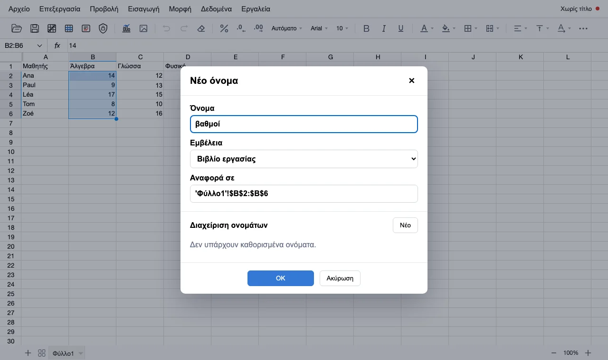

Ονομασμένες περιοχές
Ορισμός ονόματος
- Επιλέξτε το κελί ή την περιοχή.
- Δεξί κλικ › Ορισμός ονόματος… (ή το βέλος του πλαισίου ονόματος › Διαχείριση ονομάτων).
- Γράψτε το όνομα, επιλέξτε το πεδίο ισχύος, OK.

| Πεδίο | Περιεχόμενο |
|---|---|
| Όνομα | αρχίζει με γράμμα ή _· γράμματα, ψηφία, _ και ., χωρίς κενό· όχι διεύθυνση όπως B2 |
| Εμβέλεια | Βιβλίο εργασίας: διαβάζεται από όλα τα φύλλα· ένα φύλλο: διαβάζεται μόνο από αυτό, όπου υπερισχύει ονόματος του βιβλίου |
| Αναφορά σε | ένα κελί ή μια περιοχή, με το φύλλο της: 'Φύλλο1'!$B$2:$B$6 |
Χρήση ονόματος
=AVERAGE(βαθμοί)
=τιμή*(1+φπα)- Το βέλος του πλαισίου ονόματος απαριθμεί τα ονόματα: η επιλογή ενός επιλέγει την περιοχή του, στο φύλλο του.
- Όταν η επιλογή είναι ακριβώς μια ονομασμένη περιοχή, το πλαίσιο δείχνει το όνομά της.
- Μια αναπτυσσόμενη λίστα μπορεί να διαβάζει μια περιοχή κελιών, δοσμένη με τη διεύθυνσή της.
Τροποποίηση, διαγραφή
Στο Διαχείριση ονομάτων, κλικ σε ένα όνομα επαναφέρει τα πεδία του για τροποποίηση· το Διαγραφή το διαγράφει· το Νέο επιστρέφει σε κενό όνομα. Πριν διαγράψετε ένα όνομα, αντικαταστήστε τους τύπους που το διαβάζουν: κρατούν την τελευταία τιμή τους και μετά δεν υπολογίζονται πια.
Τα ονόματα αποθηκεύονται στο αρχείο Excel και διαβάζονται από αυτό.